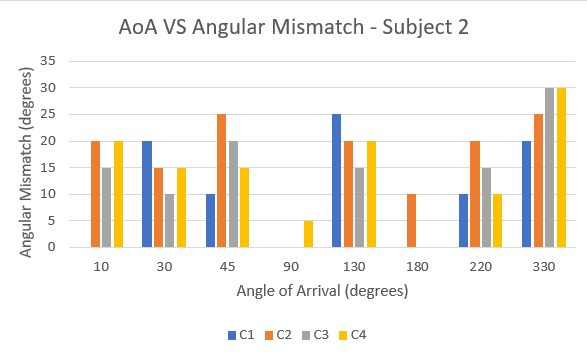

Learning Personalized HRTFs from Binaural Recordings
- Question
- Can personalised 3D audio be learned from a cheap pair of microphones, as a first step towards hearing aids tuned to each person's ears?
- Method
- Recorded sound at both ears from marked angles and estimated head-related transfer functions two ways: broadband least squares and per-frequency cross-correlation.
- Finding
- Listeners placed the synthesised sound within about 10° (±5°) of its true direction at most angles.
- Role
- Student researcher, SINRG, University of Illinois Urbana-Champaign, with Prof. Romit Roy Choudhury.